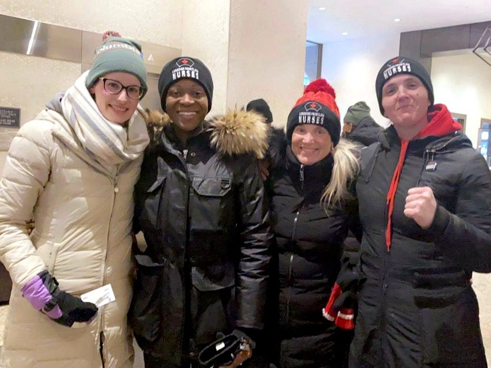
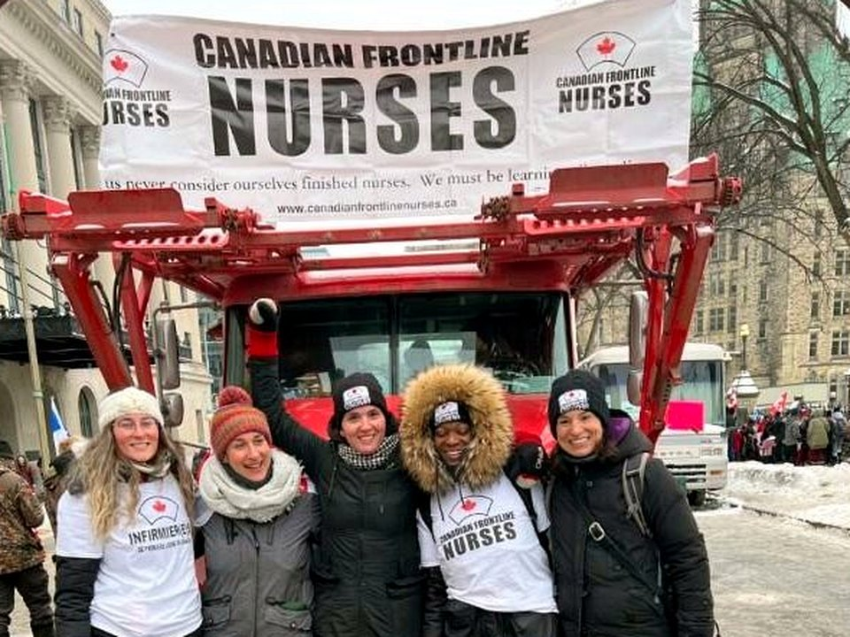
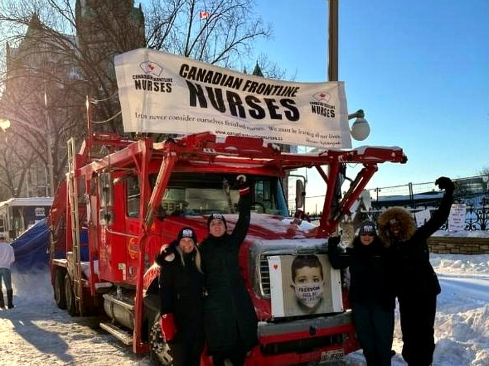
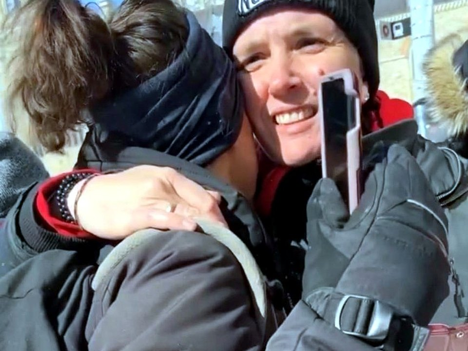

Sarah for Freedom


Advocating for Informed Consent, Free Speech & Constitutional Freedoms
Help defend the right of Canadians to be heard by the courts and to challenge unlawful executive power.
Please consider donating to our legal support fund for our case to the Supreme Court of Canada.
Interac E-Transfer:
Send to sarahc4freedom@gmail.com
Please include “SCC Appeal” in the message line.
GiveSendGo:
Support our case to the SCC
Sarah Choujounian is a former Registered Practical Nurse (RPN) from Ontario, Canada, with over a decade of experience caring for children with disabilities, senior residents in long-term care, and advocating as a union leader. She became a vocal critic of certain COVID-19 policies, believing that lockdowns and mandates were causing more harm than good. After speaking publicly and challenging the official narrative, she faced backlash and lost her nursing positions.
Sarah founded Nurses Against Lockdowns, an advocacy group focused on raising awareness about the detrimental social and psychological effects of restrictive COVID-19 policies. She later co-founded Canadian Frontline Nurses, which organized rallies and events supporting healthcare workers opposed to vaccine mandates, and promoted open scientific dialogue on the measures implemented by public health authorities.
Sarah remains committed to defending free expression, informed consent, and the right of Canadians to challenge government action in court.
The federal government is asking the Supreme Court of Canada for permission to appeal decisions that found its use of the Emergencies Act was unlawful.
Canadian Frontline Nurses opposes the government’s position. We say the courts were right to find that the legal test for using the Emergencies Act was not met, that the declaration of a public order emergency was unreasonable, and that key measures — especially the financial measures — violated the Charter.
We are also asking the Supreme Court to deal with a further issue: when emergency measures directly target a group of Canadians, do those Canadians have to wait until they are arrested, fined, jailed, or financially frozen out before they can challenge those measures in court?
The case is at the leave to appeal stage.
That means the Supreme Court of Canada has not yet agreed to hear the case. The Court is now deciding whether the issues are important enough to be heard at a full appeal.
The Court may decide to hear the government’s appeal, Canadian Frontline Nurses’ appeal, both appeals, or neither. If leave is granted, there will be a full hearing. If leave is denied, the Federal Court of Appeal decision remains in place.

Because Canadian Frontline Nurses was not watching from the sidelines. It was part of what was happening on the ground in Ottawa.
Canadian Frontline Nurses was physically present in Ottawa, supported the truckers and other participants, livestreamed and communicated what was happening on the ground, engaged directly with participants and support networks, and solicited donations to support the truckers in their protest.
Canadian Frontline Nurses was recognized as a key participant and supporter of the Freedom Convoy protest. Within days of the Emergencies Act being invoked, Canadian Frontline Nurses brought the first legal challenge in the country.
The protest, from the perspective of those participating in it, was about opposition to COVID-19 mandates and restrictions, concern about government overreach, and the defence of bodily autonomy, informed consent, free expression, and basic civil liberties.
When the Emergencies Act came into force, it applied to people like us — people who participated in the protest, supported it, donated to it, or helped sustain it. Those people faced arrest, fines, jail, and frozen bank accounts.
We were part of the group the emergency measures were directed at. That is why this case matters.



Canadian Frontline Nurses raised three core arguments from the beginning.
First, the Emergencies Act should not have been used. We argued that the government did not meet the legal test required to declare a public order emergency, and that there was no true national emergency involving threats to the security of Canada.
Second, we argued that the decision was political, not legal. In plain terms, we argued that the Act was used to deal with a political problem, not a lawful emergency under the Act. Canadian Frontline Nurses was the only party to squarely raise that issue.
Third, we argued that Canadians still have basic legal protections, even in an emergency. That includes protections under the Charter and the Canadian Bill of Rights relating to property, due process, and access to financial services such as bank accounts.
Two courts have already ruled on the government’s use of the Emergencies Act.
The Federal Court found that the government did not meet the legal test required to invoke the Act, that the declaration of a public order emergency was unreasonable, and that key measures — especially the financial measures allowing accounts to be frozen — violated the Charter.
The Federal Court of Appeal dismissed the government’s appeal and upheld those key findings.
In plain terms: both courts found that the government’s use of the Emergencies Act was unlawful.
The government is asking the Supreme Court to reverse those findings and validate its use of the Emergencies Act.
Canadian Frontline Nurses opposes that. But our appeal also deals with the rule the courts applied to people like us — people who were clearly subject to the emergency measures, but whose bank accounts were not actually frozen and who were not actually charged.
The courts concluded that because the harshest consequences were not imposed on us personally, we could not fully pursue our own challenge.
We say that is wrong. Canadians should not have to wait until the government imposes the penalty before they can challenge emergency measures that already apply to them.
“Standing” means the right to bring a case before a court.
In this case, the courts said Canadian Frontline Nurses did not have standing because the most serious consequences — such as frozen bank accounts or charges — were not actually imposed on us personally.
We say that misses the point. When emergency measures are directed at you, control what you can do, threaten you with penalties, and expose you to financial consequences, you are affected in a real and practical way.
It ignores the coercive effect of government power.
A law does not only affect people when the government finally punishes them. It affects people when it tells them that what they are doing is illegal, threatens them with serious consequences, and gives officials or financial institutions the power to act against them.
If that approach stands, Canadians may be told: you cannot challenge the measure when it targets you. You must wait until the damage is done.
Because Canadian Frontline Nurses was exactly the kind of participant and supporter the emergency measures were aimed at.
We were present. We supported the truckers. We helped amplify what was happening through livestreams and public communication. We solicited donations to support the protest. We were recognized as key participants and supporters.
That made our evidence and perspective important. We were not asking the Court to speculate about what happened. We were asking the Court to consider the evidence and arguments of people who were actually there and actually subject to the regime.


Although the courts found that the Emergencies Act was used unlawfully, they did not decide every argument Canadian Frontline Nurses raised.
In particular, they did not decide our argument that the decision to invoke the Act was unreasonable because it was politically motivated.
They also did not decide our argument based on the Canadian Bill of Rights, including the protection of property and due process when the government uses emergency powers affecting access to bank accounts and financial services.
Our appeal asks the Supreme Court to decide whether people in our position can challenge emergency measures that directly apply to them, even if the government has not yet imposed the harshest consequences on them personally.
It is about whether Canadians who are subject to coercive emergency powers can go to court before they are arrested, fined, jailed, or financially frozen out.
It is also about whether courts should hear from people who were directly involved and directly affected when deciding whether government power was lawfully used.
The government is asking the Supreme Court to reverse the findings that its use of the Emergencies Act was unlawful.
That includes defending the declaration of a public order emergency, the use of emergency powers against protest activity, financial measures that allowed accounts to be frozen, and penalties attached to the emergency measures.
The government’s appeal is about whether its use of the Emergencies Act should be upheld.
Our appeal is about who gets to challenge those emergency measures, and when.
We say Canadians should not have to wait until the government actually imposes the penalty before they can ask a court to decide whether the measures are lawful.
Before this case reached the Supreme Court, Chief Justice Wagner made public comments about the Freedom Convoy and the people involved.
Those comments included describing what happened in Ottawa as a beginning of “anarchy,” referring to people taking other citizens “hostage,” and saying that the conduct should be denounced forcefully by those in positions of authority.
Canadian Frontline Nurses was the only party with the courage to raise the concern that those comments could give rise to a reasonable apprehension of bias. When a judge has already spoken publicly about the events at the centre of a case, it can affect public confidence in whether the case will be decided fairly.
We asked that he step aside. He decided that he will remain involved.
This is not about personal criticism. It is about ensuring that courts are seen to be fair, independent, and impartial.
The Supreme Court will decide whether to grant leave to appeal. It may hear the government’s appeal, our appeal, both appeals, or neither.
If leave is granted, there will be a full hearing before the Supreme Court of Canada. If leave is denied, the Federal Court of Appeal decision remains in place.
Because this case is about more than one protest. It is about government power and access to justice.
Can emergency powers be used against Canadians without meeting the legal test? Can people challenge emergency measures when they are subject to them? Or must they wait until they are arrested, fined, jailed, or financially frozen out?
These questions affect everyone.
This case is about defending the right of Canadians to challenge government power before the damage is done.
It is about making sure emergency powers stay within legal limits. It is about ensuring courts hear from people who were directly affected when deciding whether the government acted lawfully.
The courts found the Emergencies Act was used unlawfully. The question now is whether Canadians have to wait until they are punished before they can challenge it.
Interac E-Transfer:
Send to sarahc4freedom@gmail.com
Please include “SCC Appeal” in the message line.
The following materials relate to Canadian Frontline Nurses’ application for leave to appeal to the Supreme Court of Canada.
Our application explains why the Supreme Court should hear the issues about the right to be heard, the role of directly affected parties, and the Canadian Bill of Rights.
The government’s response to Canadian Frontline Nurses’ application for leave to appeal.
Our reply explains why the government’s response confirms the importance of the issues raised.
The following articles and commentary discuss the Supreme Court leave applications and the issue of Chief Justice Wagner’s participation.
Supreme Court justice asked to consider recusing himself from Emergencies Act appeal
Group asks Supreme Court chief justice to recuse himself from Emergencies Act case
LILLEY UNLEASHED: Supreme Court Chief Justice Richard Wagner has declared he is above the law
Michael Higgins: The arrogance of Chief Justice Richard Wagner
Sarah’s College of Nurses of Ontario case will be updated shortly. This section will explain what is happening in that proceeding, why it matters, and how it connects to free expression, informed consent, and the right of healthcare professionals to participate in public debate.
This case is about defending the right of Canadians to be heard by the courts and challenging the unlawful use of executive power.
If you want to support that effort, you can contribute through GiveSendGo or by Interac e-transfer.
Interac E-Transfer:
Send to sarahc4freedom@gmail.com
Please include “SCC Appeal” in the message line.
Public support helps ensure that these issues, and the evidence and arguments behind them, can be fully and properly put before the Court.
Follow Sarah on Social Media:
Twitter/X |
Facebook |
Instagram |
TikTok